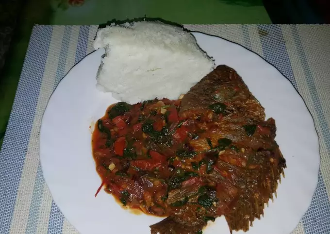

Wet fried Tilapia recipe
Tilapia is an inexpensive, mild white fish that’s easy to prepare and cook, making it an appealing
dinner choice.

Ingredients
- 1 deep fried tilapia fish
- 1 tomato
- 1 onion
- Cooking oil (1 table spoon)
- Crashed garlic (2 cloves)
- Dhania
- 1/2 cup of water
Cooking instructions
- Put the cooking oil in a pre-heated cooking pan
- Add the onions and fry until they turn into a golden-brown color
- Add the garlic and cook for half a minute
- Add the tomatoes and cook till a paste is formed(about 2 minutes)
- Add the water and bring the mixture to boil(or use pre-boiled water).
- Dip the fish and cover to cook for about 5 minutes(under low heat)
- Sprinkle the dhania on top and set aside
- Serve with ugali